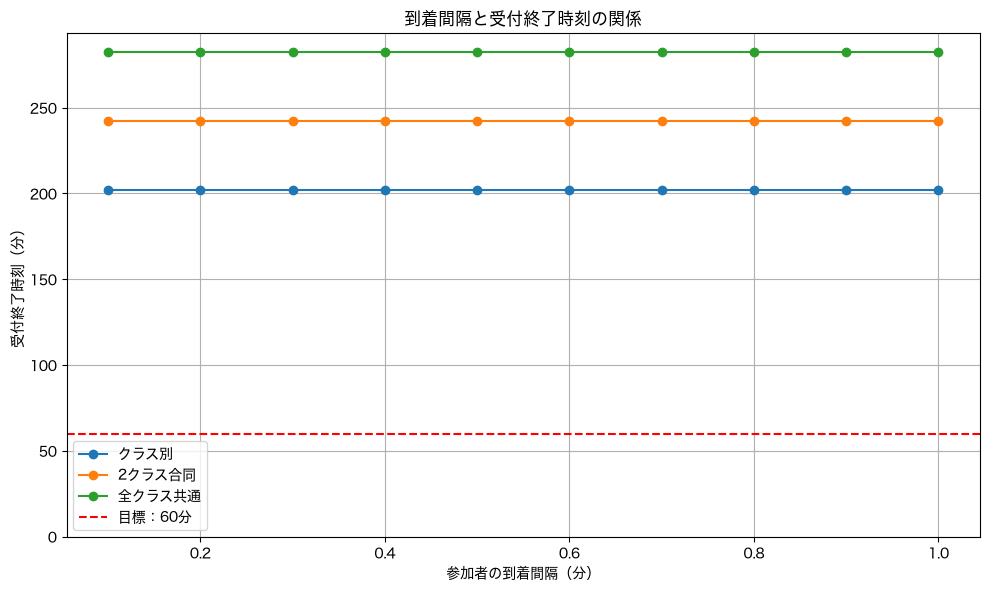
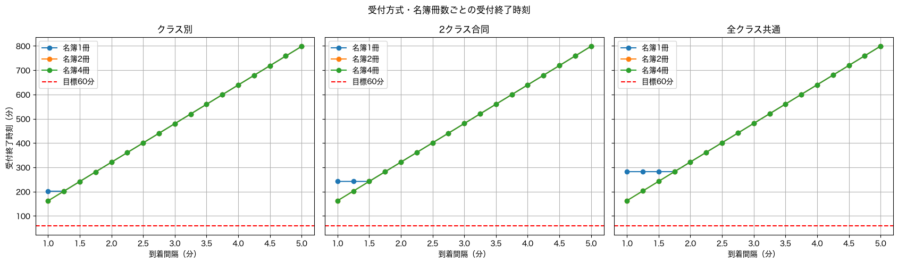
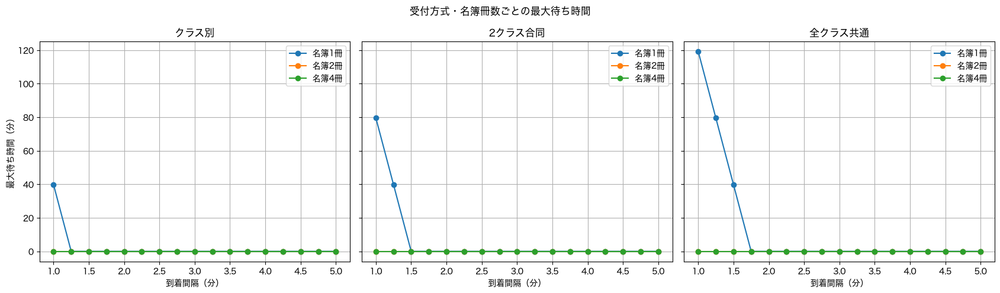
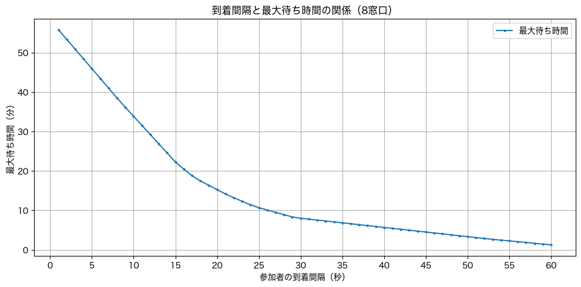
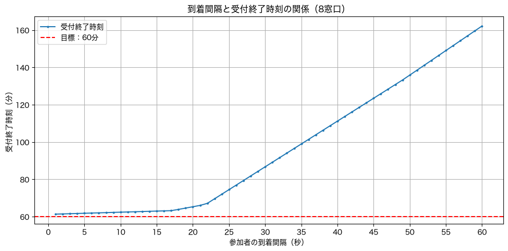

共テの情報みたいなシミュレーションやってみた
先日、中学の同窓会の案内が来ました。
地元があまり好きではないのですが、クラスメイトと会うのも最後になりそうだし、せっかくなら行くか〜と思い、出欠フォームを出そうとしたところ……
ん？？？？？
受付時間クラス別なん？？？？？
ちなみに開演（？）は18時です。つまり1組の人は1時間近く待たされるという……。
これだから田舎は（こら）
こういうクラスとか性別とか性別とか性別とかによる理不尽なことが尽きない、それがうちの地元（というか出身校）でしたね。思い出しましたよ。
1組出身で他クラスにしか友達がいない奴（＝こいつ）が可哀想だろ！！！！！
ということで、クラスごとに受付時間を区切らずとも受付は回る、というのをデータで証明してやります。
はじめに
今回は「参加者が到着する間隔や受付窓口の振り分け方によって、最大待ち時間がどれくらい変化するか」を調べることを目的とします。
最終的な結論として「クラス別で時間区切らなくても所要時間たいしたことないだろ！」を示したい。
仮説
クラス別に受付時間を区切らない方法で、全員の受付終了までの時間が45分より短くなる条件は存在する。
シミュレーション条件
- クラス数：4クラス
- 参加人数：160人（1クラス40人）
- 受付窓口：4つ
なお、1人あたりの受付所要時間について、名簿は紙なので、窓口が複数クラス合同であればあるほど時間がかかると仮定しました（1つの名簿を回すため）。受付時間は比較項目によって変えています。
また、受付作業そのものの時間とは別に名簿を使う時間も存在するものとし、その合計が実際の1人あたりの受付所要時間になるモデルにしました。
比較項目
次の2点を比較します。
- 参加者が1分・2分・3分……おきに到着する場合
- 窓口の分け方（3通り）
A：窓口をクラス別にする場合
B：1・2組、3・4組のように2クラスずつ合同にする場合
C：4つの窓口を全クラス共通にする場合
それぞれの1人あたり受付所要時間は以下の通りです。
- A（クラス別）：3分
- B（2クラス合同）：3.5分
- C（全クラス共通）：4分
名簿を使う時間は以下の通りです。
- A（クラス別）：1分
- B（2クラス合同）：1.25分
- C（全クラス共通）：1.5分
さらに、名簿を次の窓口に渡す時間を0.25分としました。
分析方法
今回は表形式のデータを扱うにあたって、pandas（Pythonのライブラリ）を使用しました。
Pythonコードは時短のためちゃっぴーにお任せ……まあ、今回のシミュレーションはお遊びみたいなもんなので？？？ね？？？？（あとでコードちゃんと読むね）
Notebookを作成してコードセルをいくつかに分けて書いたのですが、結果2で使ったコードもまとめて入れたものを別ページに置いておきます。多分見にくいですが……！
シミュレーションに使用したコード（別ページ）結果

えーと？？？？200分？？？？4時間弱？？？？
ユニバのアトラクションかい。
まあ、実際は受付4人とは限らないし、160人全員が来るとも限らないし、結構無茶なシミュレーションをした自覚はありますよ？？
ということで、次は名簿の数を増やすとどうなるかやってみました。
結果2


おお！！！
名簿が増えるって大事ですね。また、到着間隔が広ければ広いほど、名簿数による差はなくなっていくこともわかりました。
ただ、アナログ紙名簿を使っていそうなうちの地元において、誰が来て誰がまだ来ていないかを把握するには、一人の名前が一箇所にしか書いていないタイプの名簿にしないと難しいのでは……。つまり、複数名簿は窓口が複数クラス合同の場合、現実的ではないのかもしれません。
ということで受付の人数を増やします。そして、受付時間・待ち時間が比較的小さかった「クラス別」にします。
結果3
一旦条件を整理します。
- 受付方式：クラス別窓口
- 1クラスあたりの窓口：2つ（合計8窓口）
- 1クラスあたりの名簿：1冊
受付時間や名簿の使用時間は、これまでの検証で「クラス別」とした場合と同じです。
ちなみに、どのクラスの人がどの順番で来るかはランダムにしました。
結果……


なんと、60分を下回ることはできませんでした……。
実際の受付では、一度に3人くらいが来たり、到着間隔もそこまできれいに揃っていなかったりすることなどが原因かもしれません。
そうか……主催の決めた受付時間には勝てなかったか……。
あと、到着間隔が狭かったら狭かったで、待ち時間がえぐい人いますやん。これは困るね。
終わりに
とまあこんな感じで検証してみたわけですが、記事を書く時間も含めて2時間くらいかかったので、時間がないときにやることじゃない。何やっとんねん。課題を先にやりなさい。
でも、本来の「初心者のたのしいプログラミング」って、こういう日常のふとした疑問を解決したくてやるものじゃないかな、と思いました。初心に帰ったといいますか。共通テストの太郎と花子は日常的にこういうことをやっていて偉いですね。
結果的に仮説は成立しませんでしたが、「共テの情報で扱われているテーマを実際にやってみたよ」という一例だと思ってください（笑）。
とりあえず！！！分析するのはすごく楽しかった！！！！！！思い通りにはいかないもんだね！！！！！